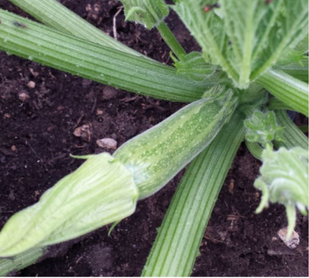
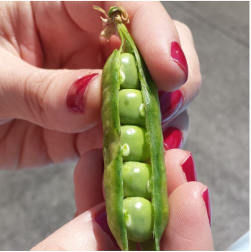

Produzione 2019
Piselli

Coltiovare in terreno molto ricco di materia organica e non ciltivare dopo Solanacee o piante della stessa famiglia delle cucurbitacee
- Varietà: Zucchina chiara di Faenza
- Periodo di Semina: Marzo / Aprile
- Primo raccolto: Fine Aprile
- Ultimo raccolto: Fine luglio
- Raccolto
| dimensione |
Quantità |
| Piccole (10cm) |
16 |
| Medie (11-16cm) |
26 |
| Grandi (16cm) |
9 |
>Aqcuista Semi<
Piselli

| American Wonder: |
Varietà media precoce come ciclo colturale. |
Consigli
- Piantare in semenzaio riscaldato.
E' importante:
- Acquistare vesetti biodegradabili (di cocco o cartone)
- Mantenere areato il semenzaio per evitare muffe
- Non usare il coperchio del semenzaio
- Non usare mettere il semenzaio vicino al termosifone
- Fissare i sostegni nel terreno non appena le piantine raggiungono i 10cm
- Acquistare una rete con spazi di non più di 10 cm per garantire sostegni adeguati
>Aqcuista Semi<